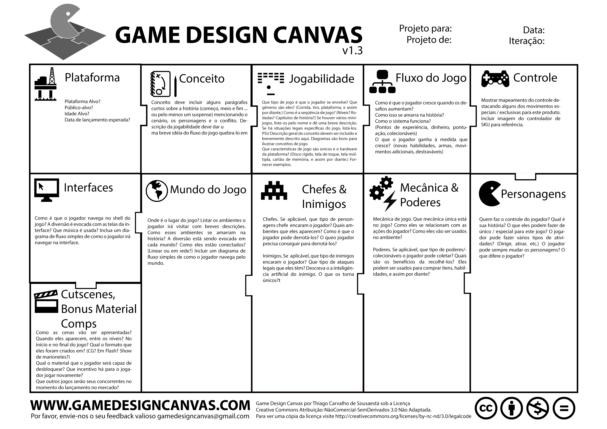

Pessoal, como não consegui encontrar uma data antes das férias e assim acabamos tendo apenas um workshop até agora, vou disponibilizar boa parte do material por aqui. Assim vocês podem acessar o material do Code Club e podemos usar os próximos workshops também para tirar dúvidas.
Vocês devem se lembrar do Canvas que montaram no último encontro presencial. Aquele canvas é mais adaptado para um novo negócio. Como nós estamos fazendo um jogo, e não uma empresa de games, vamos utilizar um outro canvas para ajudá-los no desenvolvimento do jogo.
Versão online do Game Design Canvas.
Para utilizar a versão online do Game Design Canvas clique em "File", então em "Make a Copy". Isso vai criar um arquivo no seu drive. Agora você pode compartilhar com os outros membros do grupo clicando em "Share", que é um botão azul no canto superior direito. Acho que precisa ter uma conta do Gmail para utilizar assim. Assim todo o grupo mexe no mesmo arquivo. Cada um pode ter um arquivo separado e também um outro para o grupo todo.
Vocês podem visualizar uma versão do Canvas com a explicação do que deve estar em cada quadradinho aqui. Eu apaguei as indicações e criei uma versão para ser impressa, está aqui.
Aqui estão os pdfs para as atividades do Code Club:
{kind=link}
{kind=link}